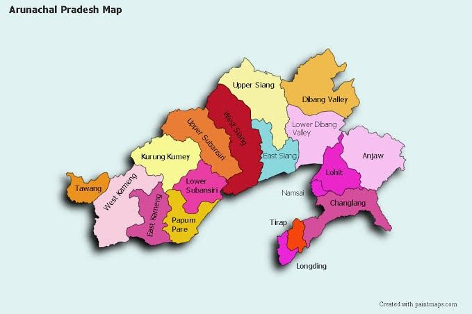

| Name: | Arunachal Pradesh |
|---|---|
| Capital: | Itanagar |
| Language: | English, Hindi, Arunachali |
| Chief Minister: | Pema Khandu |
| Total Districts: | 25 |
| Population: | ~1.4 million (as per 2011 census) |
| Formation: | 20 February 1987 |
| Area: | 83,743 km² (14th largest in India) |
| Borders: | Assam, Nagaland, Bhutan, China |
| Coastline: | None (Landlocked State) |
Know more